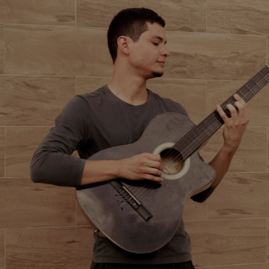

Queriate Silva
VOZ E VIOLÃO

Sobre mim
Com 26 anos, minha paixão pelas artes começou na infância, mas a música sempre foi meu refúgio. Comecei com o violino aos 8 anos, depois participei de grupos de canto na adolescência e, aos 16, comecei a me apresentar em bares. Aos 18, aprendi a tocar violão, e desde então, tenho tocado em bares, eventos e desenvolvido meus projetos pessoais, abrangendo MPB, Pop Rock, Brega e músicas internacionais. Cada nota é uma parte da minha jornada, e a música é a maneira como compartilho meu pedaço desse turbilhão que é a vida. Se quiser saber mais, é só dar um toque, estou sempre na estrada.